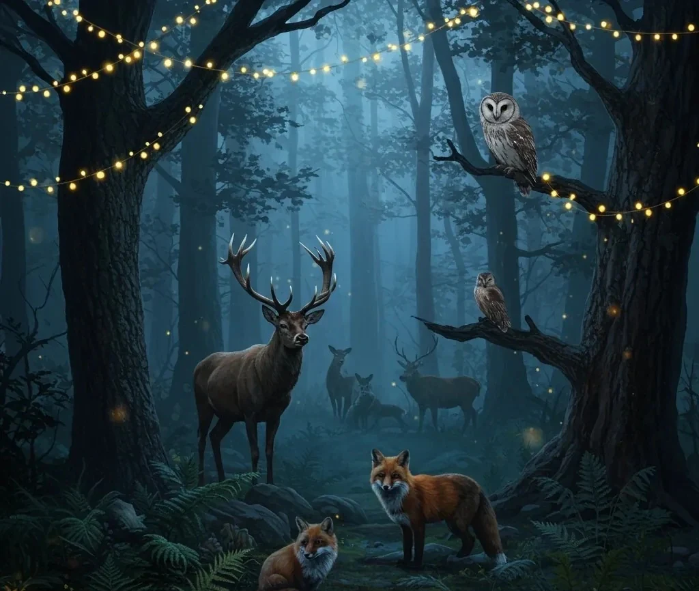
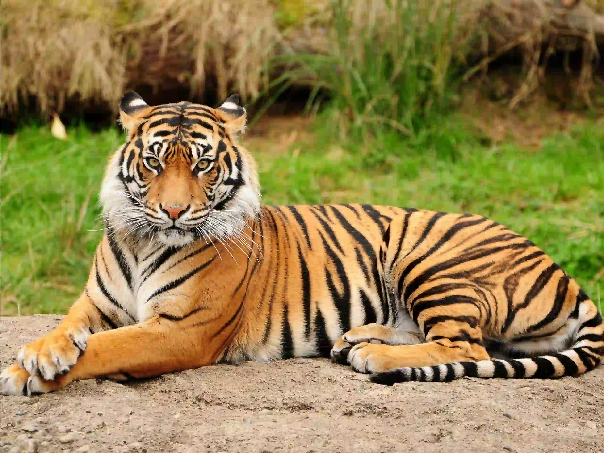

Caring for Animals starts with Awareness
Animals play an important role in maintaining the balance of nature and deserve care, protection and respect. Through this website, users can learn more about wildlife, endangered species, pet care and conservation efforts that help protect animals and their habitats. Together, we can raise awareness and make a positive difference for animals around the world.

Short Fact about the Tiger and the Tigress
Tigers are one of the largest wild cats in the world and are known for their strength agility and solitary hunting habits. A tigress uses the white spots on the back of her ears to communicate with her cubs. They act as a flasher to the cubs when a tigress senses danger, she flattens her ears and the cubs respond by crouching down and hiding.

Short Fact about the Mauritian Kestrel
The Mauritian Kestrel is a rare endangered bird species found only in Mauritius and was once considered one of the rarest birds in the world. Habitat destruction and the use of harmful pesticides caused its population to decline rapidly. Thanks to conservation programs and habitat protection, the species has slowly recovered over the years, showing the importance of wildlife conservation and environmental awareness.